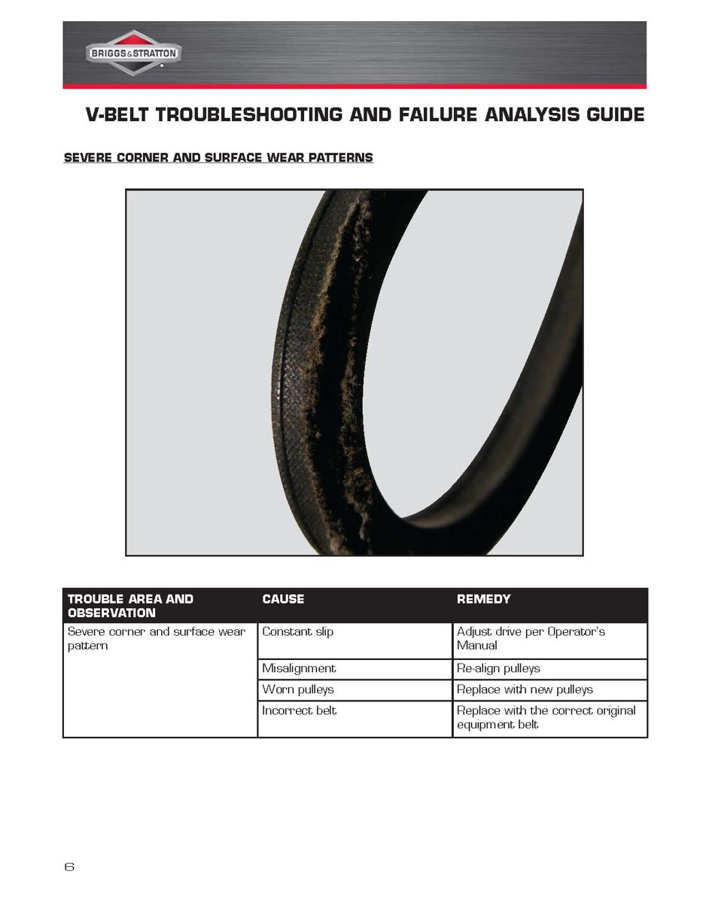

A scooter drive belt rarely fails without a reason. The wear on the old belt shows whether it simply reached the end of its life or whether something else is wrong: slipping, oil, heat, a bad pulley or a jammed object. Read the old belt before you fit a new one, or the new belt may fail the same way. The photos show general V-belts; scooter belts are wider and toothed underneath, but they wear in the same patterns.
Safety
- Let the drive case cool. The belt, pulleys and clutch get very hot.
- Belt dust is fine and dirty. Do not blow it into your face; wipe it out with a damp rag.
You need
- The old belt out of the scooter: Inspect and replace the scooter drive belt.
- A torch, a magnifier and a vernier caliper. The minimum belt width from your scooter's manual.
Steps
- Keep the old belt dirty at first. Lay it on clean paper in good light.
- Measure the width in several places. Narrower than the manual's limit means normal wear; uneven width means it slipped or burnt in one spot.
- Compare the belt with the table below and note every pattern you see.
- Look at the pulley faces, rollers and clutch bell for the matching cause: grooves, a step on the face, blue heat marks, oil, or flat rollers: Check variator rollers and sliders, Check the scooter clutch and bell.
- Turn the pulleys slowly by hand and watch for a bent shaft, a wobbling pulley or rough bearings.
- Check that nothing touches the belt except the pulleys: no rubbing on the case, loose covers or debris.
- Fix the cause, clean both pulleys dry with brake cleaner, and fit the correct belt for your model.
| What you see | Likely cause | What to do |
|---|---|---|
| Sides worn, frayed or glazed all round | Constant slipping, worn pulleys, or wrong belt | Check rollers, clutch and pulley faces; fit the correct belt |
| Severe wear on one corner or on the top | Belt rubbing on the case or debris, or pulleys out of line | Find the rub, clear it, check alignment |
| Sides soft, sticky or swollen | Oil or grease on the belt | Fix the leak, clean the pulleys with degreaser, new belt |
| Sides dry and hard, cracks across the bottom | Heat: slipping, heavy loads, blocked cooling duct, or old age | Clear the duct; check slipping; new belt |
| Burnt patches in one place on the sides | Belt slipped at a standstill, for example when the clutch grabbed under load | Check the scooter clutch and bell |
| Belt turned over or rolled in the groove | Worn pulley faces, pulleys out of line, or wrong belt section | Check pulleys and belt part number |
| Broken, cords pulled out | Sudden shock, an object jammed in the drive, or cords damaged when fitted | Check for debris and damage; never lever a belt over a pulley edge |
| Cut on the bottom | A sharp edge, burr or object in the drive | Find and remove the edge or object |
- Never use belt dressing spray on a scooter belt. It softens the rubber and makes slipping worse.
- Store spare belts flat or loosely coiled, out of the sun and away from heat. Do not hang them on a nail.
Check your work
- You have named the cause and fixed it before fitting the new belt.
- The new belt has the same code as the old one and the correct width.
If it did not fix the problem
- New belt still slips: Scooter revs but accelerates slowly.
- Judder when pulling away: Scooter judders when pulling away.
- Oil in the case: Oil leaking from the scooter rear gear case.